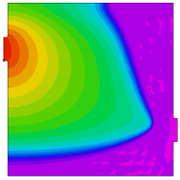

|
black_oil |

  
|
|
black_oil |
|
{ BLACK_OIL.PDE
This example considers the transport of oil and water in soil.
The model is given in Gelinas, et al, "Adaptive Forward-Inverse Modeling
of Reservoir Fluids Away from Wellbores", (Lawrence Livermore National
Laboratory report UCRL-ID-126377) and in Saad & Zhang, " Adaptive Mesh for
Two-Phase Flow in Porous Media" (in Recent Advances in Problems of Flow and
Transport in Porous Media, Crolet and El Hatri, eds., Kluwer Academic Publishers,
Boston, 1998).
The saturation of water is represented by S, with the saturation of oil defined
as 1-S. The relative permeabilities of water and oil are assumed to be S^2 and
(1-S)^2, respecitvely. The total mobility M is defined as
M = S^2/muw + (1-S)^2/muo,
where muw and muo are the viscosities of water and oil.
The total velocity, V, and the fractional flux, f, are defined as
V = - K*M grad(P)
f = [S^2/muw]/M,
where K represents the saturation-independent permeability coefficient, and
P is the pressure, assuming capillary to be zero and oil and water pressures
equal.
If the porosity Phi is taken as constant and gravity effects are negligible, the
PDE's governing the system reduce to
Phi*dt(S) + div(V*f) = 0
div(V) = 0.
Here we study the flow through a 30-meter box with an inlet pipe in the upper
left and an outlet pipe in the lower right. The box is initially filled with oil,
and water is pumped into the inlet pipe at a constant pressure. Time is measured
in seconds.
-- Submitted by Said Doss, Lawrence Livermore National Laboratory.
}
TITLE 'Black Oil Model'
SELECT
smoothinit { Smooth the initial conditions a little, to minimize
the time wasted tracking the initial discontinuity }
VARIABLES
s, p { Saturation and Pressure }
DEFINITIONS
muo = 4.e-3 { oil viscosity }
muw = 1.e-3 { water viscosity }
K = 1.e-12 { Saturation-independent permeability coefficient }
Pin = 1.5e6 { Inlet pressure }
Pout = 1.e6 { Outlet pressure }
M = S^2/muw + (1-S)^2/muo { Total mobility }
f = S^2/muw/M { Fractional flux }
krw = S^2/muw { Relative permeability of water }
phi =.206 { porosity }
xmax = 30 { Box dimensions }
ymax = xmax
out_ctr = 8
tfrac = 2*out_ctr
diam = 2
in_ctr = ymax-out_ctr
rad = diam/5
epsvisc = 1.e-6 { A little artificial diffusion helps smooth the solution }
sint = integral(s) { the total extraction integral }
hour = 60*60
day = hour*24 { seconds per day }
INITIAL VALUES
s = 0 { start with all oil }
p = Pin + (Pout-Pin)*x/xmax { start with a rough approximation to the pressure }
EQUATIONS
s: phi*dt(s) - div(K*krw*grad(p)) - epsvisc*div(grad(s)) = 0
p: div(K*M*grad(p)) = 0
BOUNDARIES REGION 1 { fillet the input pipe, and define no-flow boundaries of the box } start(-2*rad,in_ctr-diam) natural(p)=0 natural(s) = 0 line to (0,in_ctr-diam) fillet(rad) line to (0,0) to (xmax,0) to (xmax,out_ctr-diam) fillet(rad) line to (xmax+2*rad,out_ctr-diam)
{ set constant outlet pressure, and "tautological" saturation flux } value(p) = Pout natural(s) = -K*krw*dx(p) line to (xmax+2*rad,out_ctr+diam)
{ reset no-flow box boundaries } natural(p)=0 natural(s)=0 line to (xmax,out_ctr+diam) fillet(rad) line to (xmax,ymax) to (0,ymax) to (0,in_ctr+diam) fillet(rad) line to (-2*rad,in_ctr+diam)
{ set constant inlet pressure and saturation } value(p) = Pin value(s) = 1 line to close
TIME 0 to 120*day by 10 |
 |
MONITORS
for cycle=5
contour(s) as "Saturation" range(0,1)
contour(s) zoom(xmax-tfrac+2*rad,0, tfrac,tfrac) as "Outflow Saturation"
range(0,1)
contour(p) as "Pressure"
vector(-K*M*grad(p)) norm as "Flow Velocity"
PLOTS
for t = day by day to 20*day
by 10*day to 120*day
grid(x,y)
contour(s) as "Saturation" range(0,1) painted
surface(s) as "Saturation" range(0,1) painted viewpoint(60,-120,30)
contour(s) zoom(xmax-tfrac+2*rad,0, tfrac,tfrac) as "Outflow Saturation"
range(0,1) painted
contour(p) as "Pressure" painted
vector(-K*M*grad(p)) norm as "Flow Velocity"
contour(K*M*magnitude(grad(p))) norm as "Flow Speed" painted
HISTORIES
history(sint) at (0,0) as "Extraction"
END